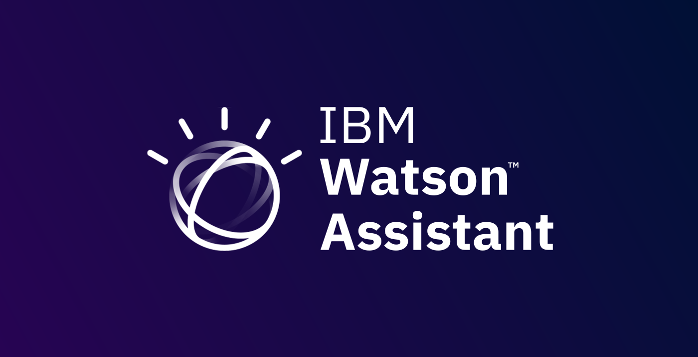

01 · 2024–2025
Login.gov Help Center
Redesigning the Login.gov Help Center and phone support around the problems people actually have, so they get unstuck without waiting on an agent.
Staff Product Designer at Login.gov
I'm Mostyn, a product designer working across content, interaction and research. At Login.gov I help over 150 million people sign in to the benefits and services they rely on.
Selected work
01 · 2024–2025
Redesigning the Login.gov Help Center and phone support around the problems people actually have, so they get unstuck without waiting on an agent.
02 · 2021–2022
Helping people confidently choose multi-factor authentication, and making sure losing one method doesn't lock them out of government services.
03 · 2023–2024
Rewriting and re-illustrating the security key setup page so the people who own a security key succeed, and the people who don't aren't led astray.

04 · 2019–2021
A new conceptual model for IBM's chatbot builder that lets non-technical teams build a working assistant in minutes instead of hours.
05 · 2017–2024
Taking a group communication concept from 0→1 into a product used by student organizations at hundreds of campuses.
Also
About
My work is rooted in the belief that government and civic services should be held to the same standard as the best consumer products. Access to benefits, healthcare, and public infrastructure shouldn't depend on someone's patience for a broken interface.
I'm a Staff Product Designer at Login.gov, the federal government's single sign-on service used by over 150 million Americans to access benefits and services. Before moving into civic tech, I was the founding designer at Flare, taking the product from 0 to 1 and scaling it to 500K+ monthly users across 500+ colleges, and a Product Designer on IBM Watson Assistant, where I owned the overhaul of the chatbot-building experience for non-technical users. I also worked with HUSH Studios on experiential design for clients including Uber.
I hold a BFA in Graphic Design with Honors from the Rhode Island School of Design, and I'm based in Brooklyn, NY.